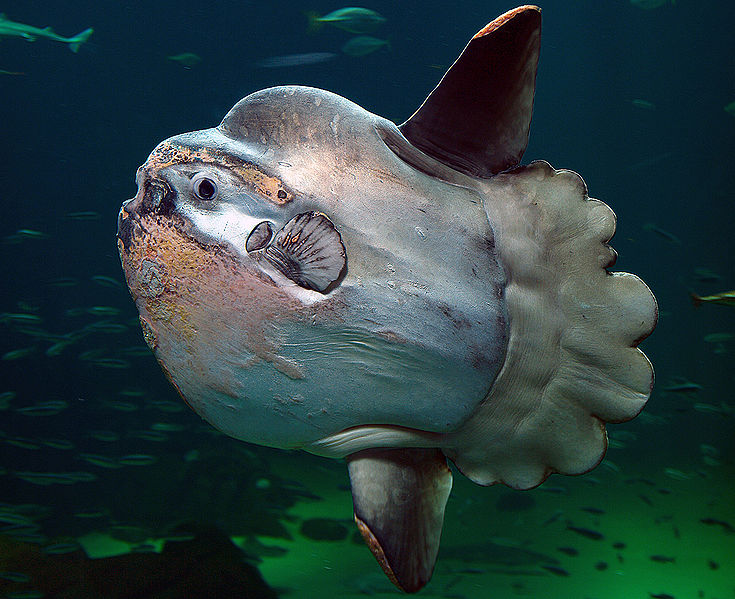

Луна-рыба

Луна-рыбы — это удивительные и малоизученные создания, поражающие своими размерами, внешним видом и колоссальной плодовитостью. Принадлежат они к крошечному семейству, насчитывающему всего три вида: обыкновенная луна-рыба, острохвостая луна-рыба и ранцания. Это семейство относится к отряду Иглобрюхообразных и состоит в родстве с такими видами как спинороги, рыбы-фугу и иглобрюхи.
Своим названием луна-рыбы обязаны необычной форме тела. У наиболее известной обыкновенной луна-рыбы оно почти круглое, у ранцании и острохвостой луна-рыбы слегка вытянуто и напоминает дыню или торпеду. При этом с боков тело уплощено, но изяществом не отличается. Края тела кажутся рваными и напоминают неудавшийся блин. Во всех языках мира так или иначе содержится указка на этот необычный признак. В большинстве европейских языков этих существ называют луна-рыба или рыба-солнце, латинское название вида переводится как «жернов», а в польском языке эту рыбу называют «самоглав», поскольку создается впечатление, будто она состоит из одной только гигантской головы. Туловище луна-рыбы действительно сильно укорочено, но самое удивительное, что у нее отсутствует главный орган движения — хвост! Его заменяет лопасть, лишенная собственной мышечной системы. Тело луна-рыб кажется высоким за счет сильно развитых овально-заостренных спинного и анального плавников. Грудные плавники, наоборот, очень маленькие. Глаза сравнительно большие с добродушно-глуповатым выражением. Рот этих рыб тоже сравнительно небольшой, острые зубы образуют нечто наподобие челюстей, но для разгрызания твердых предметов непригодны. Кожа очень толстая, грубая на ощупь из-за костных пластинок, усеивающих ее, но в то же время эластичная.
Луна-рыбы хоть и не блещут красотой и изяществом, но не вызвать восхищения не могут. Дело в том, что это самые крупные из всех костистых рыб, уступающие в размерам только китовой акуле (хрящевой рыбе). Обычный размер взрослой особи 2-3 м в высоту (поскольку по вертикали они длиннее, чем по горизонтали), вес -около 1 т. В Книге рекордов Гиннеса зарегистрирована луна-рыба размером 4,2 м и весом 2,3 т! Единственный «карлик» в этом семействе — ранцания длиной всего 80 см. Окраска этих существ также подчеркивает сходство с луной или жерновами. Она серая, иногда с беловатыми пятнами на боках. Интересно, что луна-рыбы способны незначительно менять цвет: от грифельно серого до почти белого. У этих рыб отсутствует половой диморфизм, поэтому внешне самцы и самки не отличаются друг от друга.